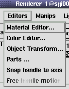
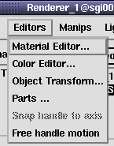

As Editors and for Transforming Objects you can use the following tools (see above):
 
| Before using one of the three editors
above, select a geometry object either by
clicking in the GeometryObjects selection list or clicking on the geometry object itself (in PickMode! ) |